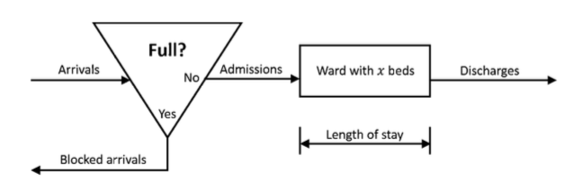

Determining the optimal number of beds for hospital wards with the help of simulations
Jun 2018 ~ BSc Course "Project Business Analytics 2"
Length: 1mo (at 0.5 FTE)
Software: Microsoft Excel (Crystal Ball add-in)
Data: Number of arrivals, the average length of stay, and the number of
admissions recorded per period
Problem description:
The number of beds available on a ward can be regarded as a maximum level for the number of patients.
On the one hand, if beds are removed, money is saved, but the rejection rate increases as fewer
places are available. On the other hand, more beds imply higher costs. However, this also
means that it is more likely that patients in need of medical help will not be declined due
to lack of space

Approach:
Created a model that can simulate the number of patients in the ward after a certain number
of periods, based on the arrival rate and the discharging probability, which were modeled as
Poisson and Binomial distributions, respectively. Then, Crystal Ball was used to simulate the
entire scenario a large number of times, computing the average occupation and blocking rates.
Moreover, it was implemented an admission scheme for elective patients and an option that allows a different
number of beds per day to further enhance the outcome of the model.
Results:
The number of beds per ward that satisfies the requirements of the hospital when it comes to
the occupation and blocking rates has been estimated through trial and error using the simulation model.
Furthermore, the improvement strategies have materialized in saving 10.5% of the yearly costs.